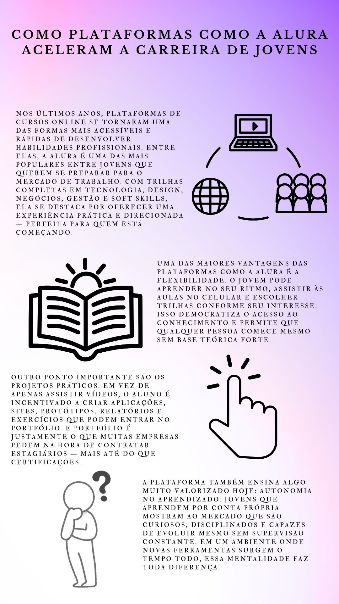
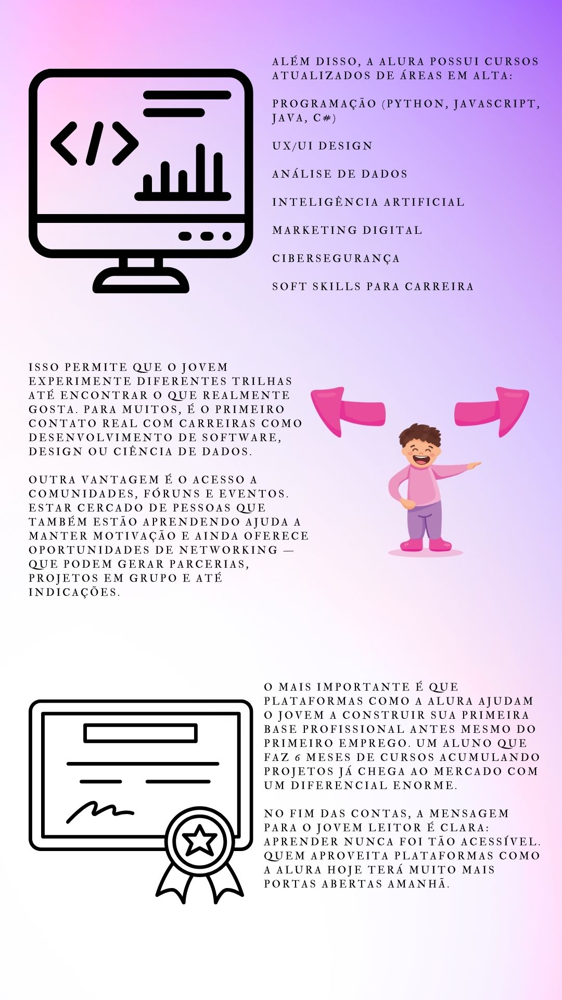
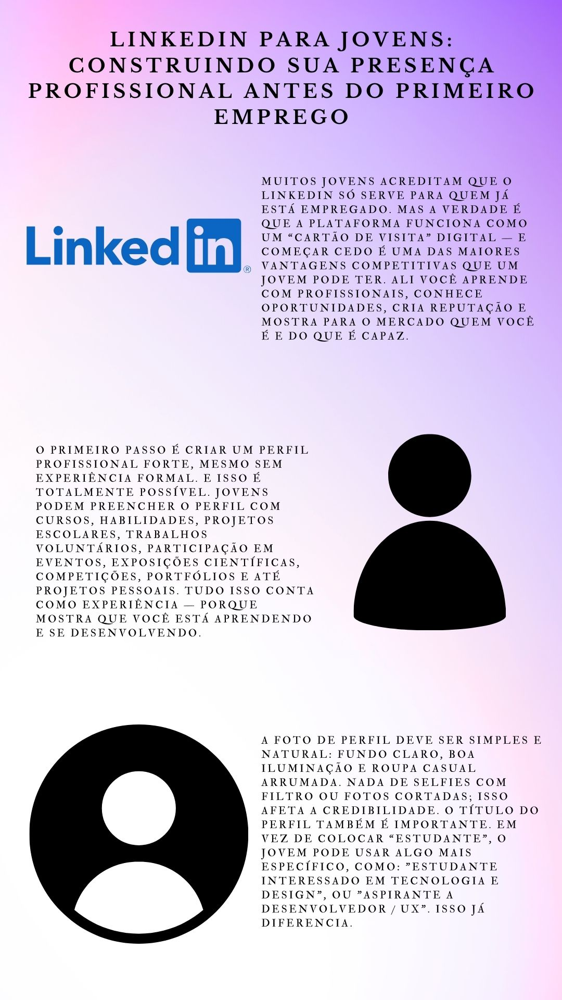
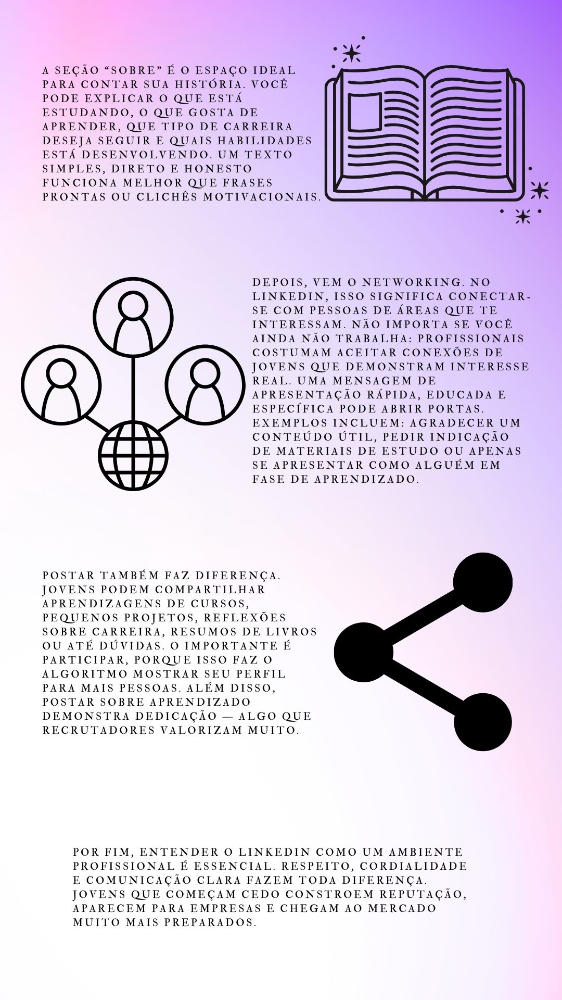
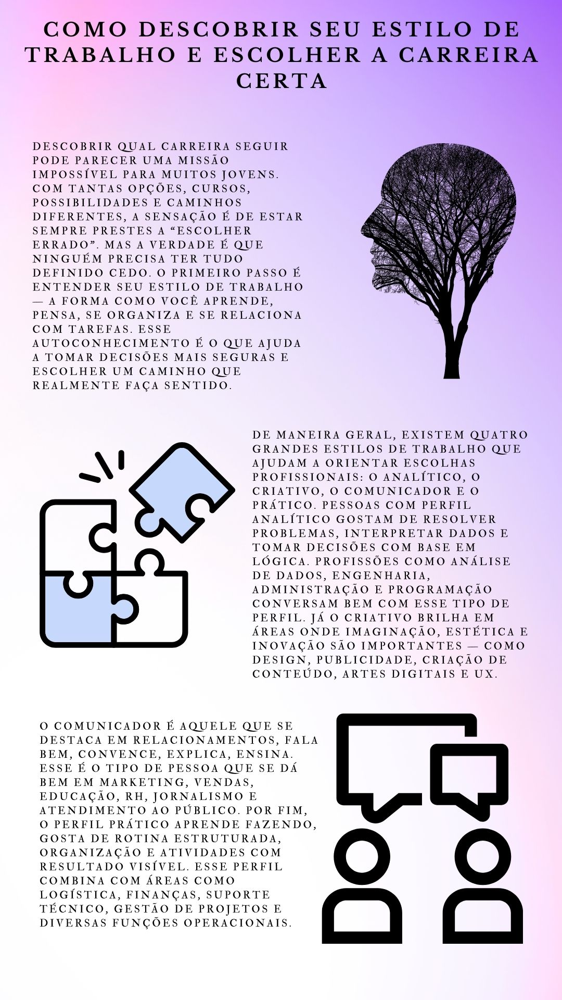
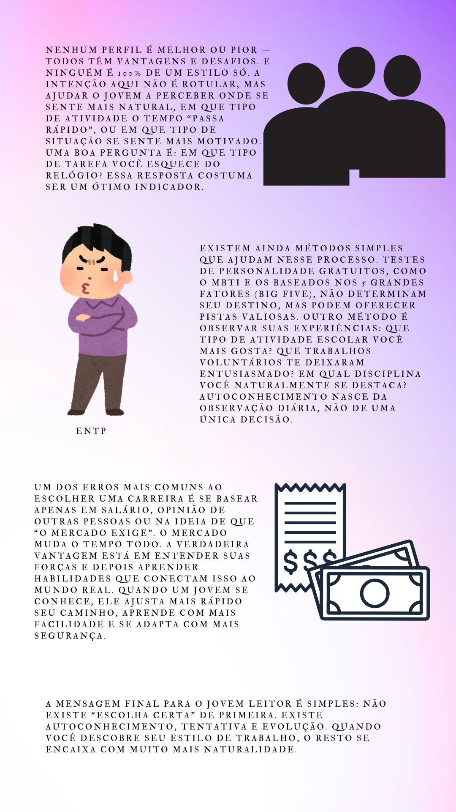

<
E-
JOVEM
seção
Desenvolvimento Pessoal
Conteúdo sobre Desenvolvimento Pessoal.
Nossas Materias
Como Plataformas Como a Alura Aceleram a Carreira de Jovens
LinkedIn Para Jovens: Construindo Sua Presença Profissional Antes do Primeiro Emprego.
Como Descobrir Seu Estilo de Trabalho e Escolher a Carreira Certa.
◆
Como Plataformas Como a Alura Aceleram a Carreira de Jovens
 
◆
LinkedIn Para Jovens: Construindo Sua Presença Profissional Antes do Primeiro Emprego
 
◆
Como Descobrir Seu Estilo de Trabalho e Escolher a Carreira Certa
 
▲